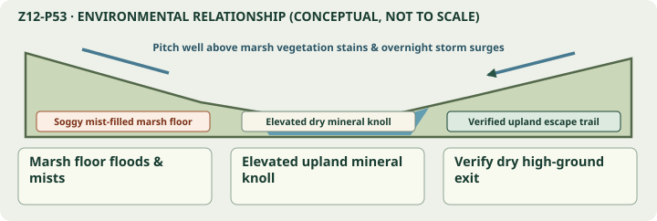

Z12-P53 · Extreme environments · New manuscript
Choose elevated dry camp pads clear of wetland water-table surges
Site overnight camps above marsh water tables, fog pockets and sudden storm flooding in wetland corridors.
When it applies · Canoe trips, bog-country hikes and low-lying forest camps near marshes and swamps.
Equipment · Topographic map, elevated durable pad inspection and insect-screened shelter.

Actions
- Scout well before dusk for elevated upland knolls or firm mineral-soil benches clearly above marsh vegetation lines—marsh floors saturate quickly during overnight rain even without dramatic hills nearby.[X12, E04, E22]
- Avoid pitching inside low willow/alder swales where cold damp mist pools overnight, biting insects swarm heavily and standing water rises through tent floors.[X12, E04, E15]
- Follow land-agency setbacks from marsh edges and open water, and verify an elevated dry exit path in case overnight storms raise water tables.[E21, E22, E04]
Failure recognition · Settling for a flat spongy grass clearing at the edge of a cedar swamp at dusk, waking ankle-deep in rising rainwater at 3 a.m.[X12, E04]
Verify · Confirm firm draining upland mineral soil, elevation above high-water marsh stains and insect-tight dry shelter ventilation.[X12, E04, E22, ED]
Stop or change course · If standing water creeps across the camp pad or heavy rain threatens low access trails, pack dry gear and move immediately to high ground.[E04, T16, X12]
Evidence and editorial notes
- E04 · NWS · Flood Safety: Key Points for Camping and Hiking (agency PDF)
- Section: Before and during camping; know your surroundings · Conditions: Stream valleys and runoff channels subject to flash flooding
Support: Choose higher ground away from water channels. Rain far upstream can drive rapid flooding.
Limitations: Dry streambeds and gentle swales can flood rapidly without local rainfall. · Conflicting evidence: None; aligns with NWS-FLOOD.
Editorial note: Core hydrological exclusion rule for shelter placement. · Specialist reviewer: Emergency management and hydrology
Primary source · checked 2026-11-24 - E15 · NWS · Cold Weather Safety (current web edition)
- Section: Cold Weather Safety > Wind Chill and Dressing for Cold · Conditions: Cold, windy conditions where exposed skin cools rapidly
Support: Wind removes the thin warm air boundary layer around skin and permeable fabrics, sharply accelerating heat loss and frostbite onset; windproof outer shells and sheltered microclimates mitigate convective loss.
Limitations: Wind chill charts apply to exposed skin and do not change freezing point of water or equipment. · Conflicting evidence: None; clarifies physical mechanism of convective heat loss.
Editorial note: Supports wind-block geometry, shell layering, and wind-chill risk decisions. · Specialist reviewer: Cold-weather shelter and meteorology
Primary source · checked 2026-11-24 - E21 · USDA Forest Service · Know Before You Go: Camping (current web edition)
- Section: Know Before You Go: Camping > Site Selection and Safety · Conditions: Dispersed and developed National Forest camping
Support: Verify site legality, distance from water, wildlife food-storage rules, and weather exposure; leave fragile vegetation undisturbed and avoid digging drainage trenches where prohibited.
Limitations: Dispersed camping rules vary sharply by forest and wilderness designation. · Conflicting evidence: Prohibits legacy trenching practices that damage soils and still fail in heavy runoff.
Editorial note: Replaces obsolete ditch-digging advice with slope/drainage site selection. · Specialist reviewer: Land management and wilderness shelter
Primary source · checked 2026-11-24 - E22 · NPS · Leave No Trace Seven Principles (current web edition)
- Section: Principle 2 > Travel and Camp on Durable Surfaces · Conditions: Campsite selection and shelter setup on public lands
Support: Pitch shelters on established pads, rock, gravel, dry grass, or snow rather than fragile meadows or saturated shorelines; do not alter terrain or cut live vegetation for shelter frames.
Limitations: Deadfall shelter construction is inappropriate in high-use or protected zones except genuine life-safety emergencies. · Conflicting evidence: Restricts destructive improvised shelter building during routine trips.
Editorial note: Separates lawful low-impact practice from emergency improvised cover. · Specialist reviewer: Land management and wilderness ethics
Primary source · checked 2026-11-24 - T16 · NWS · Flood Safety (current web edition)
- Section: Flood Safety > Turn Around Don't Drown and Flash Flood Warnings · Conditions: Watch vs Warning decisions near rivers, creeks, and low roads
Support: Distinguish a Watch (conditions favorable; prepare and adjust route) from a Warning (hazard imminent or occurring; move to higher ground immediately); never walk or drive into floodwater.
Limitations: Flash floods can crest rapidly in narrow drainages before warnings reach offline hikers. · Conflicting evidence: None; aligns with E04 and T07.
Editorial note: Clarifies Watch vs Warning decision thresholds in Z01 scenarios. · Specialist reviewer: Emergency management and meteorology
Primary source · checked 2026-11-24 - X12 · US EPA · What is a Wetland (current web edition)
- Section: What is a Wetland > Bogs, Fens, Swamps and Marshes · Conditions: Upper Midwest boreal bogs, marshes, beaver ponds and coastal wetlands
Support: Wetlands feature saturated hydric soils, floating vegetation mats (quaking bogs), hidden channels and fluctuating water tables that conceal deep muck, unstable footing and slow-draining floodwaters.
Limitations: Winter ice over bogs and wetlands is especially erratic due to decaying organic heat and seepage. · Conflicting evidence: Aligns with B014-P12 and NPS-WETLAND.
Editorial note: Core wetland terrain and quaking-bog hazard evidence in Z12. · Specialist reviewer: Wetland ecology and search and rescue
Primary source · checked 2026-11-24
Source lineage · EPA wetlands, NWS flood and NPS camping; new manuscript · Classification · New manuscript.